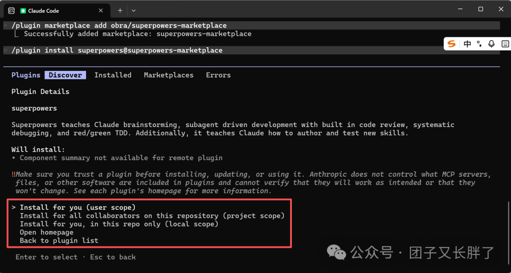
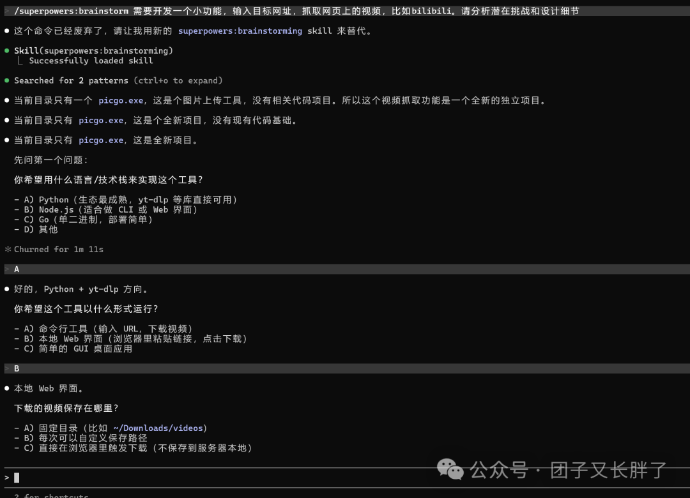
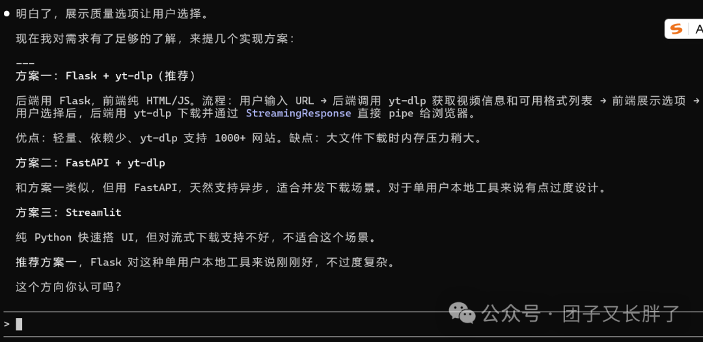
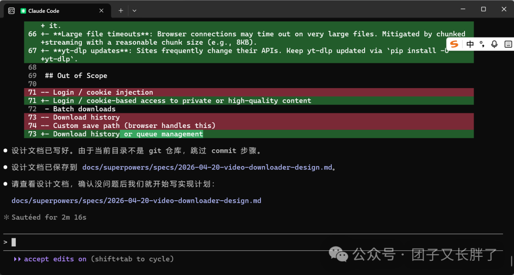
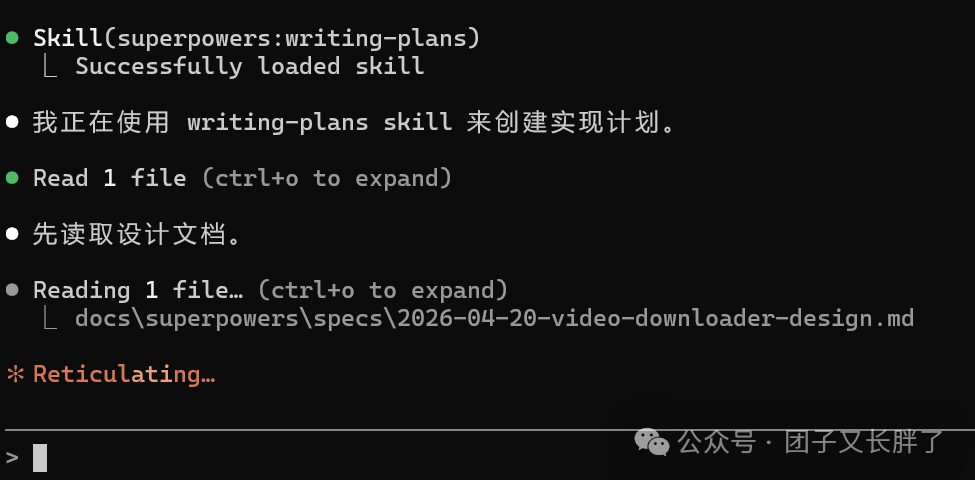
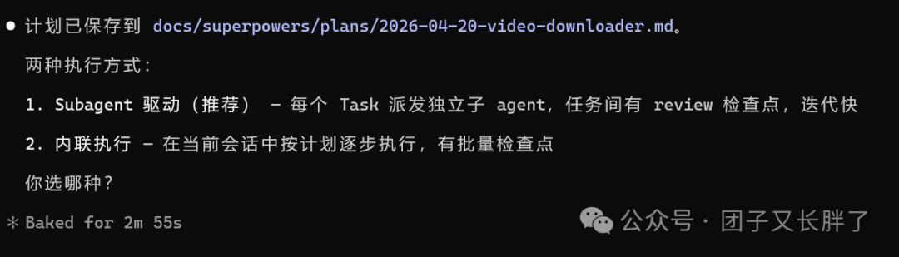
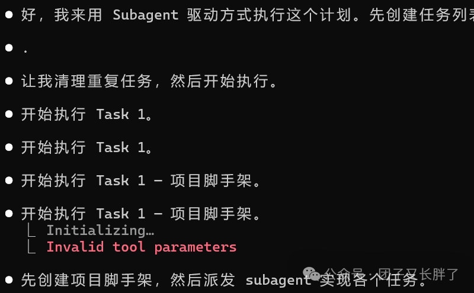
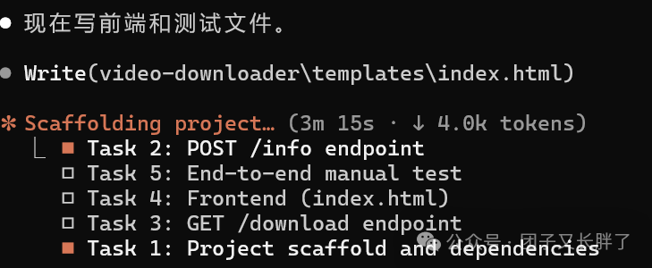
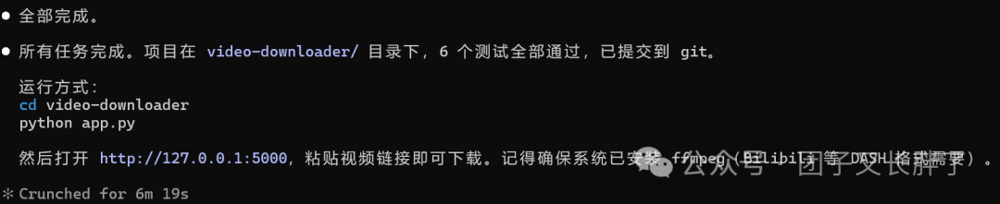

Superpowers：将工程纪律编码进 AI 工作流的元框架
来源：微信公众号 归档日期：2026-04-20 抓取状态：成功 原文字符：11310｜配图：11 张
摘要速览
无约束的 AI 编码存在三大失效模式：上下文衰减导致实现偏离需求、概率性输出导致相同提示词产出不同架构、目标函数错位导致代码通顺但不可维护。Superpowers 通过把工程最佳实践转化为自动触发的约束，让 AI 从"概率补全引擎"变成"有工程纪律的协作者"。
核心内容
- 三重机制：Spec-Driven（规范驱动）+ TDD（测试驱动）+ Systematic Workflow（系统化流程）。核心命题是：在写任何实现代码之前，先让"做什么"和"做到什么程度"变成可验证的契约，并将 Spec 从静态文档升维为动态提示词约束。
- 9 个内置 Skill（按流程串联）：
brainstorming→ 苏格拉底式需求收敛，输出 design.md（单一事实源）using-git-worktrees→ 自动创建物理隔离沙箱writing-plans→ 将设计拆解为 2-5 分钟可验证的微任务，输出 tasks.mdtest-driven-development→ 强制 Red-Green-Refactor，测试未通过禁止写实现subagent-driven-development→ 每个任务派发独立子 Agent，完成后自动双阶段审查executing-plans→ 批量线性执行，适合简单重复任务code-review→ 设计符合性审查 + 代码质量评估systematic-debugging→ 四阶段科学排错：根因→模式→假设→修复verification-before-completion→ 证据主义交付，拒绝无验证的"完成"声明
- 三层约束机制：
- 认知层（Cognitive）：SKILL.md 内的元认知规则，植入 System Prompt 作为硬性约束
- 流程层（Workflow）：基于状态机的自动路由，开发者只需在关键节点确认
- 验证层（Verification）：四个门禁点——设计确认、代码实现、任务完成、宣称完成，失败则阻塞下游
- 两种执行模式对比：
- Subagent-Driven：1 实现者 + 2 审查者 = 3 个全新会话，TDD 契合度最高，适合复杂多模块任务
- Inline Execution：当前会话内线性执行，适合简单脚本和快速验证
- 与 OpenSpec 的协同：OpenSpec 是规范层（宪法），Superpowers 是执行层（司法）。OpenSpec 提供结构化契约和变更追溯，Superpowers 提供自动触发和质量门禁。
可执行启发
（待补充）
我的想法
（留给你补充）
为什么有用
这是目前见过的最完整的 AI 编程工程化框架描述——它不是提示词技巧，而是将人类工程师的隐性经验（TDD、代码审查、规范优先）显性化为可自动执行的约束。对于需要长期维护的项目，这套框架能系统性地防止 AI 编程中最常见的质量退化问题。
具体步骤
- 安装（推荐 user scope 全局安装，工程方法论跨项目通用）
/superpowers:brainstorming→ 苏格拉底式提问收敛需求 → 确认 design.md- 框架自动触发 git-worktrees（沙箱）+ writing-plans（任务拆解）
- 选择执行模式：复杂任务选 subagent-driven，简单任务选 executing-plans
- 自动驾驶执行：开发者只需在关键节点确认 + 审阅测试覆盖率 + 处理审查反馈
- 交付物：design.md + tasks.md + 测试用例 + 实现代码 + 审查记录
/plugin 命令速查（Claude Code 插件市场）
Claude Code 通过 /plugin 命令管理插件市场（Marketplace）和插件（Skills/Agents/Hooks/MCP）。
# 查看已安装插件和市场
/plugin
# 添加官方插件市场（下载 CC 后通常自带）
/plugin marketplace add anthropics/claude-code
# 添加 Superpowers 插件市场
/plugin marketplace add obra/superpowers-marketplace
# 移除插件市场
/plugin marketplace remove <marketplace-name>
# 安装插件（@后为来源市场名）
/plugin install superpowers@superpowers-marketplace
# 刷新当前 session，获取最新插件信息（安装后必执行）
/reload-plugins操作流程：添加市场 → /reload-plugins → Discover 栏查看可用插件 → 安装 → /reload-plugins
来源补充：微信公众号（未署名）· https://mp.weixin.qq.com/s/AyfnT2ikS1-3ddTcyKrBlg · 2026-05-12
适用 / 不适用场景
- 适用：长期维护的核心项目、初涉 AI 编程的团队、需要可审计交付记录的场景
- 不适用：快速原型/一次性脚本（流程开销抵消效率）、已有成熟 CI/CD 的团队（可能与现有门禁冲突）
增量补充（来源：小米技术圈 · 申涛）
自动模式 vs 手动模式
- 自动模式：说需求就自动触发，Superpowers 在 using-superpowers/SKILL.md 里写了
brainstorming直接触发，包含完整链路 - 手动模式：用
/brainstorming、/write-plan、/execute-plan等单独调用，可按需选用 - 大需求 vs 小需求：大需求走完整流程（brainstorm → plan → subagent → TDD → review）；小需求（快速验证类）可直接用
/executing-plans跳过 brainstorm
SuperPower Hook 机制（一说需求就自动触发的秘密）
工作原理：Claude Code 启动时加载 session-start hook，注入 using-superpowers/SKILL.md 全文内容到 Agent 上下文，其中包含关键触发逻辑：
<EXTREMELY_IMPORTANT>
You have superpowers.
Below is the full content of your 'superpowers-using-superpowers' skill:
[using-superpowers/SKILL.md 的完整内容]
</EXTREMELY_IMPORTANT>因此 Agent 知道：有 Superpowers（有系统）、应该用 skills、如何组合这些 skills。
执行流程：startup/clear/compact → Claude Code 触发 SessionStart hook → 执行 run-hook.cmd session-start → run-hook.cmd 调 bash 并行执行 → session-start 组建 JSON 输出 stdout → Claude Code 读取 stdout → 注入 Agent 上下文 → Agent 知 "You have superpowers"
触发时机（matcher）：Superpowers 使用 SessionStart hook，每次会话启动自动注入。
Hook 极简主义哲学：Hook 本身不做任何业务逻辑，只做一件事——把 SKILL.md 内容注入上下文。技能执行逻辑完全在 SKILL.md 里，Hook 只是"搬运工"。
brainstorming 详解
- 苏格拉底式提问：一次一个问题，不淹没用户；设定目标让用户聚焦；提问后生成 AI Claude Objects（即
design.md），提供直观的可视化比较，帮助用户在设计上不做错误选择 - 隐藏功能（截止 v5.0.7）：brainstorming 输出的 design.md 同时用于作为 visual comparison 的输入，通过 AI 对比不同设计选项；Superpowers brainstorming 在 Claude 里可触发"苏格拉底式提问"（
-i claude模式）完成需求收敛，再写到 design.md
writing-plans 详解（四个核心思想）
- 假设最差情况：面向"零上下文初级工程师"设计计划，任何步骤都要明确到让最差情况也能执行
- 小步骤拆分：2-5 分钟粒度：每个任务只做一件事，失败后易于定位
- TDD 思想：每个任务遵循红-绿-重构循环（先写测试→写实现→重构）
- 状态文件约定：
tasks.md是任务状态的单一事实源，每个任务有明确的 Done/In-Progress/TODO 标记
subagent-driven-development 详解（四个核心思想）
- 上下文隔离：每个子任务启动全新会话（
--dangerouslySkipPermissions），不继承主 Agent 的上下文污染 - 两阶段 Review：第一阶段——子 Agent 自我 Review（
spec self-review），对照 design.md 检查；第二阶段——独立 Review 子 Agent，外部视角验收 - 模型分级：实现用 Sonnet，Review 用 Opus（成本与质量的权衡）
- 状态契约与上报机制：子 Agent 执行完毕必须向主 Agent 报告
{status: done/failed, evidence: ...}，主 Agent 不盲信"完成"声明
requesting-code-review 详解
- 两个核心思想：上下文隔离审查（独立 subagent 做 review，不受实现者思维污染）+ 早 Review 常 Review（不要等全部完成再 review，每个任务完成即 review）
- Anthropic 参考做法：使用
spec self-review格式的 review prompt，检查实现与 spec 的符合度 - 实战发现（@仝超）：Superpower 在处理复杂任务时有可能卡住，可 disable 该 plugin 后让 CC 按照 Superpower 产出的文档手动继续执行
- 实战发现（@贺滔）：gstack + superpowers 组合很好用
TDD 详解
- The Two Law：① 不允许写生产代码，除非是为了让失败的测试通过；② 写的生产代码不能超过让测试通过所必需的量
- Red-Green-Refactor 三法则：红（写失败测试）→ 绿（写最少代码让测试通过）→ 重构（改善代码但不改变行为）
- 核心价值：测试先行锁定"行为契约"，不锁定实现细节。实现可以重构，但行为必须保持
设计哲学总结（申涛视角）
Superpowers 最反直觉的设计：提高 AI 生成代码能力，靠的不是增强能力，而是约束行为。
从"该做什么"到"不能做什么"的转变：
- 工程纪律硬编码，而非靠 AI 自觉——把"最佳实践"变成"强制约束"
- 上下文隔离 + 小步验证——防止长上下文导致的方向漂移
- TDD：先有失败测试，才有生产代码
- 假设最差情况：面向"零上下文初级工程师"设计计划
- 早审查、常审查、证据至上——拒绝"我觉得完成了"的声明
- 工具而非枷锁——可按需选用，不强制所有场景走完整流程
感悟：Jesse Vincent 把十几年开源工程习惯提炼成 SKILL.md，意味着工程经验本身才是 AI 时代真正的 Superpower——AI 能写代码，但不会天然拥有工程纪律；工程经验决定了 AI 输出的上限。
原文沉淀
目录
- 🔍 为什么 AI 编程需要“规范驱动”？—— 从概率生成到契约交付
- 传统开发的认知优势
- 大模型的固有局限
- Spec-Driven Development 的本质
- 🛠️ 快速开始：安装与部署策略
- 安装范围选择：定义技能的“作用半径”
- 验证安装
- 🧰 技能全景图：从离散工具到自动化流水线
- 🎬 实战演练：B 站视频抓取工具的开发旅程
- 🔹 第一阶段：需求收敛（brainstorming）
- 🔹 第二阶段：环境隔离与任务拆解
- 2.1 using-git-worktrees：构建物理隔离沙箱
- 2. 安全校验：强制检查
.gitignore，防止隔离目录被意外提交 - 3. 环境初始化：识别项目类型，自动执行依赖安装与基线测试
- 4. 无缝衔接：为后续子代理提供干净、独立的执行上下文
- 2.2 writing-plans：将蓝图转化为施工图
- 🔹 第三阶段：执行模式选择
- 🔹 第四阶段：自动化执行与人工守望
- 🏗️ 架构透视：三层约束机制
- Layer 1：认知层（Cognitive Constraints）
- Layer 2：流程层（Workflow Orchestration）
- Layer 3：验证层（Verification Gates）
- 🔬 核心技能深度解析
- 📐 Spec 的三层抽象：从意图到行为契约
- 🧪 TDD：测试是需求的数学表达
- 🔍 systematic-debugging：科学实验式排错
- ✅ verification-before-completion：证据主义交付
- 🔗 Superpowers + OpenSpec：宪法与司法的协同
- 集成工作流
- ⚠️ 工程边界与适用场景
- 1. 软约束的局限性
- 2. Token 经济学考量
- 3. 环境就绪假设
- 🎯 场景适配矩阵
- 🌟 结语：工具的价值，在于放大而非替代
- 1. 定义正确问题的能力（精准的需求边界与验收标准）
- 2. 设计可演进架构的能力（在 YAGNI 与扩展性之间取得平衡）
- 3. 在不确定性中做决策的能力（契约与实现的冲突仲裁）
Superpowers 并非追求“更快的代码生成”，而是一套将软件工程最佳实践转化为可执行约束的元框架。它通过 Spec-Driven（规范驱动）、TDD（测试驱动）与 Systematic Workflow（系统化流程）的三重机制，将大模型从“概率性补全引擎”重塑为“具备工程纪律的协作者”。
🔍 为什么 AI 编程需要“规范驱动”？—— 从概率生成到契约交付
传统开发的认知优势
人类工程师之所以能交付可靠系统，依赖于三项隐性能力：
- • 长期上下文记忆：能追溯历史决策与技术债务
- • 抽象与收敛能力：能在需求、架构、实现之间精准切换粒度
- • 意图对齐机制：能主动澄清模糊边界，避免过度设计或遗漏核心场景
大模型的固有局限
无约束的 AI 编码往往呈现以下特征：
| 现象 | 根源 | 工程后果 |
|---|---|---|
| 上下文衰减 | 对话窗口有限，早期决策被稀释 | 实现偏离初始需求 |
| 概率性输出 | 基于统计模式补全，缺乏确定性约束 | 相同提示词产出不同架构 |
| 目标函数错位 | 优化“代码完整性”而非“需求正确性” | 逻辑通顺但缺乏可维护性 |
Spec-Driven Development 的本质
SDD 的核心命题：在敲击任何一行实现代码之前，先让“做什么”与“做到什么程度”成为可验证、可追溯、可执行的契约。
传统路径：模糊需求 → 自由发挥 → 事后测试 → 频繁返工
SDD 路径：需求澄清 → 规范契约 → 测试先行 → 验证交付Superpowers 的创新在于：它将 Spec 从“静态文档”升维为“动态提示词约束”，使 AI 在生成每一行代码时，都能自动回溯设计契约进行自我校验。
🛠️ 快速开始：安装与部署策略
Superpowers 支持 Claude Code、Cursor、Codex、OpenCode 等主流 AI 编码平台。以下以 Claude Code 为例：
# 1. 安装 Claude Code（如未安装）
npm install -g @anthropic-ai/claude-code
# 2. 注册 Superpowers 插件市场
/plugin marketplace add obra/superpowers-marketplace
# 3. 安装插件
/plugin install superpowers@superpowers-marketplace安装范围选择：定义技能的“作用半径”
| 选项 | 作用范围 | 适用场景 |
|---|---|---|
| Install for you (user scope) | 🔹 全局生效。任意目录启动 Claude Code 均可调用。 | ✅ 强烈推荐：工程方法论具备跨项目通用性，一次部署，随处复用 |
| Install for all collaborators (project scope) | 🔹 项目级共享。配置写入仓库，团队成员拉取后自动同步。 | 团队需统一开发范式与质量门禁 |
| Install for you, in this repo only (local scope) | 🔹 目录级隔离。仅限当前路径生效。 | 临时验证或沙箱测试 |
💡 为何推荐 UserScope？ Superpowers 的核心价值在于方法论沉淀。TDD、Code Review、Spec-Driven 等实践不依赖特定技术栈，全局安装可避免重复配置，形成个人工程习惯的“数字肌肉记忆”。
验证安装
/plugin list
# 或
/plugin
# 输出中包含 superpowers 即表示加载成功
验证安装成功
🧰 技能全景图：从离散工具到自动化流水线
Superpowers 内置的技能并非孤立命令，而是基于上下文状态自动触发的工程节点：
| 技能名称 | 触发机制 | 核心职责 |
|---|---|---|
| brainstorming | 手动 /superpowers:brainstorming | 渐进式需求收敛，输出结构化设计文档 |
| using-git-worktrees | 自动（设计确认后） | 创建物理隔离的开发沙箱，避免主分支污染 |
| writing-plans | 自动（设计确认后） | 将宏观设计拆解为 2-5 分钟可验证的微观任务 |
| executing-plans | 自动/手动 | 批量执行标准化任务，适用于逻辑简单、重复性高的场景 |
| test-driven-development | 自动（编码阶段） | 强制 Red-Green-Refactor 循环，测试未通过禁止写实现 |
| subagent-driven-development | 自动（执行计划时） | 为每个任务派发独立子代理，完成后自动执行双阶段审查 |
| code-review | 自动（任务完成后） | 设计符合性审查 + 代码质量评估 |
| systematic-debugging | 按需触发 | 四阶段科学排错：根因定位 → 模式对比 → 假设验证 → 修复确认 |
| verification-before-completion | 自动（宣称完成时） | 证据驱动交付，拒绝无验证的“经验主义宣称” |
🔗 关键洞察：技能间通过隐式状态机串联。开发者只需在关键决策点确认，其余环节由框架自动流转，形成“需求→规范→计划→实现→验证”的闭环流水线。
🎬 实战演练：B 站视频抓取工具的开发旅程
🔹 第一阶段：需求收敛（brainstorming）
/superpowers:brainstorming 需要开发一个小功能，输入目标网址，抓取网页上的视频，比如 bilibili。请分析潜在挑战和设计细节AI 将以苏格拉底式提问引导需求澄清，每次仅聚焦一个维度：

brainstorming 渐进式提问 1

brainstorming 渐进式提问 2
核心设计原则：YAGNI（You Ain't Gonna Need It）——在设计阶段执行精准剪枝，避免将“未来可能用到”的功能提前纳入架构。
📜
skills/brainstorming/SKILL.md中的约束规则： ``` ## Key Principles - One question at a time # 控制认知负荷 - Multiple choice preferred # 降低回答熵值 - YAGNI ruthlessly # 主动剔除冗余特性 - Explore alternatives # 强制多方案对比 - Incremental validation # 小步确认，降低决策风险 - Be flexible # 发现矛盾时主动回溯 ```
设计收敛后，框架自动生成 design.md，作为后续所有开发的唯一事实源（Single Source of Truth）。
🔹 第二阶段：环境隔离与任务拆解
设计确认后，自动触发两项关键技能：
2.1 using-git-worktrees：构建物理隔离沙箱
若项目未初始化 Git，框架会智能跳过：

Worktree 自动跳过提示
若已存在 Git 仓库，技能将：
1. 智能选址：优先 .worktrees/ → 读取 CLAUDE.md 配置 → 询问用户偏好
2. 安全校验：强制检查 .gitignore，防止隔离目录被意外提交
3. 环境初始化：识别项目类型，自动执行依赖安装与基线测试
4. 无缝衔接：为后续子代理提供干净、独立的执行上下文
2.2 writing-plans：将蓝图转化为施工图

确认生成执行计划
计划生成中

计划生成完成
输出的 tasks.md 具备高度可执行性：
## Task 2: B 站解析模块
- [ ] 2.1 实现 URL 正则校验
- [ ] 2.2 编写视频 ID 提取函数
- [ ] 2.3 添加单元测试覆盖边界情况（含错误码 100007）🔹 第三阶段：执行模式选择
框架提供两种执行策略，开发者可根据任务复杂度权衡：
| 维度 | Subagent-Driven（微服务化编排） | Inline Execution（单体式线性执行） |
|---|---|---|
| 工作模式 | 主代理派发子任务，每步完成后自动触发双阶段审查 | 当前会话内按顺序执行，内置批量检查点 |
| TDD 契合度 | ⭐⭐⭐⭐⭐ 测试写完即可介入审查，确保断言覆盖设计规范 | ⭐⭐⭐⭐ 需手动确认测试完整性 |
| 上下文掌控 | 高。可清晰追踪子代理对签名算法、URL 编码的处理逻辑 | 中。上下文连贯但细节可能被批量折叠 |
| 适用场景 | 逻辑复杂、需精细控制、多模块协同的任务 | 简单脚本、快速验证、低耦合功能 |
本例选择 Subagent-Driven：

选择子代理驱动模式

子代理启动与任务分发
🔹 第四阶段：自动化执行与人工守望
选定模式后，流程进入自动驾驶状态。开发者仅需扮演“导航员”角色：
- • 确认关键设计节点
- • 审阅测试覆盖率报告
- • 处理审查反馈（如有）
最终收尾阶段，verification-before-completion自动激活：

收尾验证阶段 1
收尾验证阶段 2
📦 完整交付物：
design.md（契约） +tasks.md（路径） + 测试用例（验证） + 实现代码（产物） + 审查记录（审计轨迹）
🏗️ 架构透视：三层约束机制
Layer 1：认知层（Cognitive Constraints）
每个 SKILL.md 本质上是一组元认知规则，用于校正 AI 的思考路径。例如 brainstorming 中的 One question at a time 并非建议，而是通过 System Prompt 植入的硬性约束，防止模型因信息过载而偏离主线。
Layer 2：流程层（Workflow Orchestration）
Superpowers 的工作流并非线性管道，而是基于状态机的自动路由系统：
stateDiagram-v2
[*] --> brainstorming
brainstorming --> design_approved: 用户确认 design.md
design_approved --> using-git-worktrees
using-git-worktrees --> writing-plans
writing-plans --> execution_mode: 策略选择
state execution_mode <<choice>>
execution_mode --> subagent-driven
execution_mode --> inline-execution
subagent-driven --> test-driven-development
inline-execution --> test-driven-development
test-driven-development --> code-review
code-review --> verification-before-completion
verification-before-completion --> [*]Layer 3：验证层（Verification Gates）
质量保障不依赖“自觉”，而依赖可自动执行的门禁：
| 门禁点 | 验证方式 | 失败策略 |
|---|---|---|
| 设计确认 | 用户审阅 design.md | 退回 brainstorming 迭代 |
| 代码实现 | RED-GREEN-REFACTOR 循环 | 删除未测试代码，强制从测试重启 |
| 任务完成 | 双阶段审查（符合性+质量） | 阻塞下游，要求修正 |
| 宣称完成 | 执行验证命令并解析输出 | 拒绝无证据的“完成”声明 |
🔬 核心技能深度解析
📐 Spec 的三层抽象：从意图到行为契约
Superpowers 引导用户将需求逐级具象化：
Level 1: Intent Spec → "用户能上传视频并生成字幕"
Level 2: Design Spec → 接口定义、错误码、数据流图、边界条件
Level 3: Behavioral Spec → Given/When/Then 场景化用例🔑 关键原则：Spec 不是“写给人看的文档”，而是写给下一个 Agent 的执行指令。每一行必须足够精确，使无上下文的新代理也能正确实现。
🧪 TDD：测试是需求的数学表达
铁律：没有先写测试，就不能写实现。
# 🔴 RED: 先立靶心
def test_fetch_video_invalid_url():
with pytest.raises(InvalidURLError) as e:
fetch_video("not-a-url")
assert e.value.code == 100007
# 🟢 GREEN: 最小实现
def fetch_video(url):
if not is_valid_url(url):
raise InvalidURLError(code=100007)
# 🔧 REFACTOR: 结构优化
def fetch_video(url):
validator = URLValidator()
validator.raise_if_invalid(url)⚠️ 反模式警示：若测试写完即通过，需警惕：1) 实现已存在（违反 TDD） 2) 测试验证了错误行为。Superpowers 强制要求：先补测试，再删实现，重新走通循环。
🔍 systematic-debugging：科学实验式排错
| 阶段 | 核心动作 | 交付物 |
|---|---|---|
| 1. 根因调查 | 稳定复现 + git diff + 边界日志 | 问题定位报告 |
| 2. 模式分析 | 对照正常实现 + 查阅设计契约 | 差异分析矩阵 |
| 3. 假设验证 | 提出假设 → 单变量修改 → 观察结果 | 验证记录 |
| 4. 修复确认 | 编写复现测试 → 修复 → 回归验证 | 修复证明 |
🚨 三次法则：同一 Bug 修复三次未解决，应暂停反思：是否误判根因？是否在与原有设计架构冲突？
✅ verification-before-completion：证据主义交付
宣称完成却不加验证，是工程实践中的伪交付。
| 宣称 | 必须提供的证据 |
|---|---|
| “测试通过” | 终端输出，0 Failure |
| “构建成功” | exit code 0 截图或日志 |
| “Bug 已修复” | 原始症状复现失败记录 |
| “子代理完成任务” | git diff 实际变更对比 |
🚩 危险信号：出现“应该”“大概”“似乎”等模糊表述，或交付前产生“这次不验证了吧”的念头时，立即暂停。
🔗 Superpowers + OpenSpec：宪法与司法的协同
| 工具 | 定位 | 优势 | 局限 |
|---|---|---|---|
| OpenSpec | 规范层（Constitution） | 结构化契约、变更可追溯、活文档 | 无执行强制力 |
| Superpowers | 执行层（Judiciary） | 自动触发、TDD 门禁、质量审查 | 对话上下文易流失 |
集成工作流
brainstorming
OpenSpec: propose
生成 tasks.md
OpenSpec: apply
Superpowers: writing-plans
Subagent + TDD 执行
OpenSpec: archive📌 渐进式原则：简单任务直接对齐
tasks.md；复杂场景才展开design.md与行为用例。修 Bug、调配置等轻量操作可直接跳过提案阶段。
⚠️ 工程边界与适用场景
1. 软约束的局限性
Superpowers 依赖提示词工程构建行为边界，无沙箱或 Git Hook 强制拦截。AI 仍可能“理性绕行”。 缓解策略：关键节点人工确认 + verification-before-completion 证据审查 + 定期 git log 审计。
2. Token 经济学考量
subagent-driven 模式下，单任务 = 1 实现者 + 2 审查者 = 3 个全新会话。50 个任务将产生显著上下文膨胀。 优化路径：简单任务走 executing-plans 批量执行；定期归档已完成任务；提取高频逻辑为共享技能。
3. 环境就绪假设
框架默认：Git 已配置、测试框架已就绪、构建命令已定义。若项目缺乏这些基础设施，需额外适配。
🎯 场景适配矩阵
| 场景 | 推荐度 | 依据 |
|---|---|---|
| 长期维护的核心项目 | ✅ 强烈推荐 | 强制流程沉淀质量，技术债务可控 |
| 初涉 AI 编程的团队 | ✅ 推荐 | 建立工程范式，避免“氛围式编码” |
| 快速原型/一次性脚本 | ⚠️ 谨慎使用 | 流程开销可能抵消效率收益 |
| 已有成熟 CI/CD 规范的团队 | ❌ 评估后使用 | 可能与现有门禁冲突，暂不支持深度自定义 |
🌟 结语：工具的价值，在于放大而非替代
传统模式：
工程师 = 需求对齐 + 架构设计 + 编码实现 + 测试编写 + 缺陷排查 + 沟通同步
↓
认知资源被低维重复劳动稀释
Superpowers 模式：
工程师 = 意图定义 + 契约评审 + 关键决策 + 质量仲裁
↓
聚焦高维判断，执行层交由自动化流水线Superpowers 并非“一键生成完美代码”的魔法，而是一套可复用的工程思维框架。它将隐性经验显性化，将个人手感系统化，将事后修补前置为事前验证。
当 AI 能够自动完成编码、测试、审查时，工程师的核心竞争力将转向：
1. 定义正确问题的能力（精准的需求边界与验收标准）
2. 设计可演进架构的能力（在 YAGNI 与扩展性之间取得平衡）
3. 在不确定性中做决策的能力（契约与实现的冲突仲裁）
工具会迭代，范式会演进，但工程纪律与系统思维永恒。
🔗 资源索引
- • 项目仓库：https://github.com/obra/superpowers
- • 技能文档：
skills/*/SKILL.md（每个文件都是可研读的工程模式）
- • 生态对比：OpenSpec | Spec-Kit
- • 实践建议：从 2-3 天工作量的功能起步 → 关键节点保留人工确认 → 用缺陷率与返工周期衡量 ROI → 逐步沉淀团队规范
📜 最后箴言：最好的工具不会替你思考，而是让你把思考用在更值得的地方。Superpowers 交付的不是代码，而是可验证的工程确定性。
归属：[[02-输入/按主题/工具与技术/_index|工具与技术]]